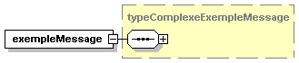
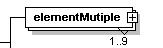
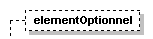
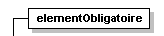
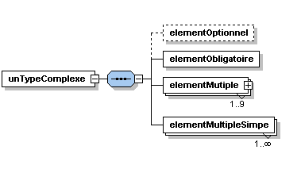
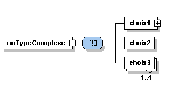
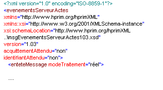

XML-Schema est une recommandation du W3C depuis le 2 mai 2001 (cf http://www.w3.org/TR). H’ XML s’appuie sur cette version de XML Schema.
Le schéma XML d’un message aide à la production du message, et à sa validation en réception.
Le schéma XML d’un message constitue un outil de validation garantissant que le message est bien conforme à la recommandation H’ XML : La validation d’un message par rapport à son schéma est une opération effectuée par un « parser », hors application. En particulier, un simple navigateur doté d’un « parser » XML compatible avec XML Schema, est capable de trancher sur le terrain, les litiges entre système émetteurs et systèmes récepteurs.
Les schémas ont été utilisés de préférence aux DTD pour les raisons suivantes :
Les schémas appartiennent réellement au monde XML ce qui n’est pas le cas des DTD
Les schémas assurent un contrôle précis de tout type de données alors que les DTD ne connaissent que les « CDATA » et les « PCDATA ».
Les schémas utilisent une démarche objet, permettant entre autres de dériver les types par restriction ou par extension, ce qui permet une plus grande fidelité des messages, par rapport au monde réel qu’ils décrivent.
Les schémas sont poussés en avant par le W3C et les grands industriels qui y participent ce qui garantit la disponibilité et l’évolution rapide d’outils « grand public » les supportant (parsers, navigateurs, bases de données).
Eléments désignés par des substantifs plutôt que des verbes.
Attributs désignés par des substantifs ou des adjectifs.
Mots simples en minuscules, sans abréviation.
Mots composés collés sans préposition ni particule ni article, le second mot et les suivants débutant par une majuscule suivant la convention LCC (Lower Camel Case). Exemples : <codePostal>, <nomNaissance>
Eléments répétitifs « au singulier » introduits par un élément père « au pluriel » représentant la collection. Exemples :
<telephones>
<telephone> </telephone>
<telephone></telephone>
</telephones>
Pas d’accent dans les noms d’éléments ou d’attributs.
Le nommage des types suit les mêmes conventions que celui des éléments et des attributs, avec en plus la convention suivante : Les noms de types complexes commencent par le mot « type ». Les noms de types simples omettent ce mot.
Le nommage des types simples pour la qualification d'un attribut débutent par «attr».
Encodage des messages : ISO-8859-1 (contenant les caractères des langues d’Europe de l’ouest) et supportant notamment les caractères accentués de la langue française.
Définition d’un domaine de noms hprimXML référençant le vocabulaire de l’ensemble des messages de la recommandation Hprim XML.
URI : http://www.hprim.org/hprimXML
Déclaré comme namespace par défaut dans les schémas et dans les messages.
Définition d’un domaine de noms inseeXML référençant le vocabulaire des nomenclatures de l’INSEE utilisées : code pays, activités socio-professionnelles, catégories socio-professionnelles,...
URI : http://www.hprim.org/inseeXML
Associé au préfixe « insee : » dans les schémas et dans les messages.
Chaque schéma est de taille réduite et contient une classe d’information homogène : Il définit un type d’élément ou un ensemble de types d’éléments apparentés.
Au premier niveau on trouve un schéma par message. Le nom de ce schéma commence par le mot-clé « msg »
Ce schéma de premier niveau inclut les schémas du second niveau qui définissent les grands blocs d’information contenus dans le message
Un schéma du second niveau inclut à son tour les schémas des niveaux inférieurs qui décomposent progressivement l’information.
Au dernier niveau on trouve les schémas définissant des informations élémentaires et générales, communes à tous les messages : adresses, numéros de téléphone, numéros Adeli ...)
Pas d’éléments globaux autres que l’élément racine de chaque message.
Les attributs sont réservés aux informations comportant un nombre de valeurs finis. Les autres informations sont stockées dans des éléments.
Le modèle de contenu « mixed content » est proscrit : On ne mélange pas les données caractères avec les éléments fils.
Un message H’ XML est stocké dans un document XML dont l’élément racine porte le nom du message. Exemple : <evenementsServeurActes>.
Un document XML est un ensemble d’éléments qui s’emboitent strictement les uns dans les autres en une structure arborescente. Certains de ces éléments sont porteurs d’attributs.
Le contenu d’un élément de type simple est du texte représentant une donnée répondant au type de l’élément. (nombre, date, chaîne,...).
La valeur d’un attribut est du texte représentant une donnée répondant au type de l’attribut (nombre, date, chaîne, ...).
Un élément de type complexe est porteur d’attributs et/ou contient d’autres éléments.
Le schéma XML définit la structure logique de l’arbre et la typologie de ses éléments et de leurs attributs.
Le schéma est donc représenté sous la forme d’un arbre qui se lit de gauche à droite et de haut en bas.
La représentation graphique décrit les éléments et leurs types.

L’élément est représenté par un rectangle en trait plein, la boite d’ouverture sur le bord droit contient le signe + ou le signe -, et dans ce dernier cas la définition du type complexe de l’élément apparaît dans un rectangle jaune en pointillé.

L’élément est représenté par deux rectangles superposés, en pointillé si la cardinalité minimum est zéro, en trait plein sinon. La boite d’ouverture sur le bord droit indique que le type est complexe. Les cardinalités minimum et maximum sont indiquées sous le coin inférieur droit.

L’élément est représenté par un rectangle en pointillé, avec un signe dans le coin supérieur gauche indiquant qu’il s’agit d’un type simple, et sans boite d’ouverture sur le bord droit

L’élément est représenté par un rectangle en trait plein, avec un signe dans le coin supérieur gauche indiquant qu’il s’agit d’un type simple, et sans boite d’ouverture sur le bord droit
L’élément est représenté par deux rectangle superposés en trait pointillé si la cardinalité minimum est zéro, en trait plein sinon. Les cardinalités précises sont indiquées sous le coin inférieur droit.

Un type complexe est symbolisé par un rectangle en trait plein au bord gauche arrondi.

Un élément de type « unTypeComplexe » contient soit un élément « choix1 » de type complexe, soit un élément « choix2 » de type simple, soit de un à quatre éléments « choix3 » de type simple.
L’émetteur d’un message doit faire figurer dans celui-ci tous les éléments optionnels qui correspondent à des informations gérées par son système d’information, même si ces informations sont vides pour l’occurrence du message.
Un élément optionnel présent mais vide correspond à une information gérée par l’émetteur, mais non renseignée dans son système pour l’occurrence présente.
Un élément optionnel présent mais vide, est matérialisé par une balise ouvrante-fermante.
Exemple : <lieuNaissance/>
Si l’émetteur est la seule source d’approvisionnement du récepteur pour une information véhiculée par un élément optionnel, et si l’élément optionnel est vide dans le message reçu, le récepteur est supposé effacer l’information concernée de son système.
Le principe général adopté pour les échanges d’informations susceptibles d’être codifiées et mises en table, est le suivant :
L’information codifiable est mise dans un élément qui offre deux solutions utilisables alternativement ou conjointement :
un attribut « valeur » qui porte le code défini dans le dictionnaire Hprim.
trois sous-éléments <code>, <libelle>, <dictionnaire> qui permettent d’utiliser une nomenclature libre, définie de gré à gré entre l’émetteur et le récepteur.
Le dictionnaire Hprim définit des listes de valeurs pour chaque type d’information (voir le chapitre C). Les codes sont définis sous la forme d’abréviations.
Dans quelques cas le dictionnaire Hprim fait référence à des dictionnaires externes. Exemples : Modes d’entrée et de sortie du PMSI, nomenclatures des examens Names-Lab, nomenlature des unités, des natures d’échantillons, ...
Les versions de la recommandation H’ XML sont référencées par un numéro majeur sur un chiffre, et un numéro mineur sur deux chiffres, suivi éventuellement par une lettre.
Exemple : H’ XML version 1.00, H’ XML version 1.03a
Certains messages peuvent évoluer entre deux versions de la recommandation. C’est pourquoi la version d’un message est définie par le numéro majeur et le numéro mineur de la version à laquelle il appartient, plus un numéro d’incrément et éventuellement une lettre propre au message.
Le numéro de version d’un message est inscrit dans le nom de son schéma.
Exemple : msgEvenementsServeurActes100.xsd est le schéma du message <evenementsServeurActes> version 1.00.
Une instance de message indique son numéro de version par le nom du schéma qu’elle référence dans son élément racine, et par l'attribut version.
Exemple :
